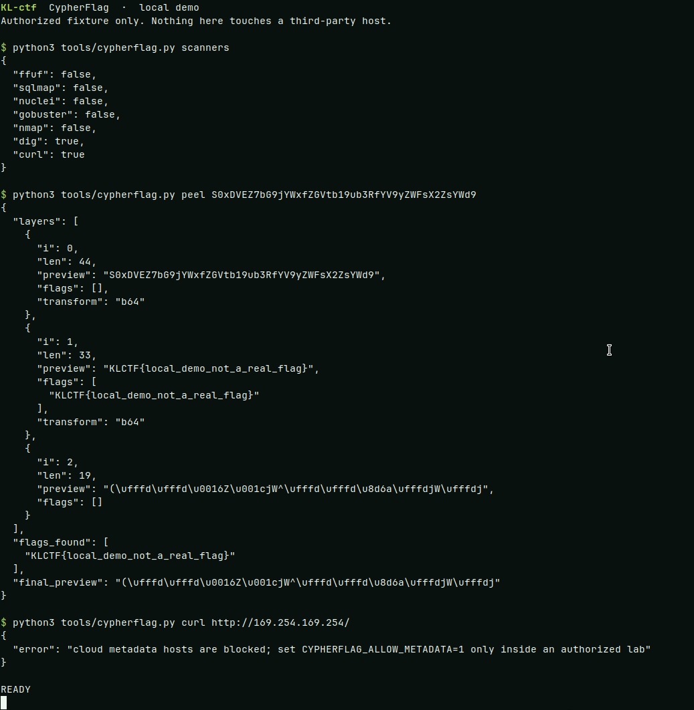

Triage before guessing
The agent classifies the file, URL, or ciphertext, then loads one category skill instead of a generic prompt.
CypherFlag · agentic CTF harness
Paste a capture-the-flag challenge into Cursor. KL-ctf triages the artifact, runs dig, nmap, and curl, and keeps a written trail until there is a flag to submit. Authorized labs only.

The agent classifies the file, URL, or ciphertext, then loads one category skill instead of a generic prompt.
dig, nmap, curl, and whois share one CLI. ffuf, sqlmap, and nuclei join in when they are installed.
Notes land in notes/. A found flag is printed as FLAG: and appended to the ledger.
Python 3.10 or newer. On Windows, use WSL or Git Bash for the shell scripts.
git clone https://github.com/ryaneditraj/KL-ctf.git
cd KL-ctf
python3 -m venv .venv
source .venv/bin/activate
pip install -r requirements.txt
bash scripts/solve.sh doctor
python3 tools/cypherflag.py scannersKL-ctf, also called CypherFlag, is an open-source agentic capture-the-flag harness by Ryan Editraj. It is the tool layer around a Cursor agent for authorized CTF labs and security education.
No. A chatbot answers once. This harness gives the agent tools, category skills, a notes folder, and a loop that continues until a flag is found or you stop it.
The workshop set is dig, nmap, and curl, plus whois. ffuf, sqlmap, and nuclei run when they are installed. python3 tools/cypherflag.py scanners shows what this machine has.
No. Use a CTF you joined, a lab you own, or a host inside a written scope. The CLI refuses non-HTTP schemes and cloud metadata addresses, and it verifies TLS by default.
Ryan Editraj, an AI builder and tech creator. Instagram: @ryaneditraj.